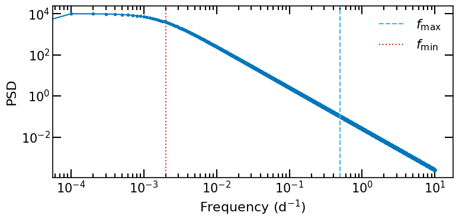

Evaluate the power spectral density at a set of frequencies \(f_j\) to get a set of power values \(P_j=\mathcal{P}(f_j)\)
Draw two random numbers \(N_{1,j}\) and \(N_{2,j}\) from a standard normal distribution for each frequency \(f_j\).
Calculate the complex Fourier coefficients \(A_j=\sqrt{P_j/2} \left (N_{1,j}+\mathrm{i}N_{2,j} \right)\). Where \(A_0=0\) so that the mean of the time series is zero and the last value \(A_j\) is a real number.
Calculate the inverse Fourier transform of the coefficients \(A_j\) to get a realisation of the time series \(x(t)\).
To reduce the effects of aliasing and leakage in the generated time series we extend the frequency grid with two factors: \(S_\mathrm{low}\) and \(S_\mathrm{high}\), for low and high frequencies, respectively. The grid of frequencies is then given by \(f_0 = f_\mathrm{min}/S_\mathrm{low} = \Delta f\) to \(f_N = f_\mathrm{max}S_\mathrm{high}\).
The generated time series will be longer than the desired time series, to obtain a time series of duration \(T\) with sampling period \(\Delta T\), a random subset of the long time is selected. The subset is then resampled to the desired sampling period \(\Delta T\).
The true variance of the process is given by \(\int_{-\infty}^{+\infty} \mathcal{P}(f) \mathrm{d}f\). To correct for the variance of the generated time series, we multiply the time series by a factor \(2\sqrt{f_0}N\). More details about the sample variance of time series are given in the notebook on the sample variance.
The main method is implemented in the timmer_Koenig_method() method of the class Simulations. This method is used to generate the long-term time series. Then a random subset is selected and resampled to the desired sampling period using the extract_subset_timeseries() and sample_timeseries() methods. This is done under the hood by the simulate() method, which we detail in the next section.
The first thing to do is to define the parameters of the time series, duration, sampling and PSD model and the parameters of the method which are scaling factors for the frequency grid.
All of these are given to the initialisation of a Simulations object.
We can plot the PSD model to see what it looks like:
Show code cell sourceHide code cell source
fig,ax=Sim.plot_psd(figsize=(8,4))

To generate a random time series we use the simulate() method. We specify the method to use with method='TK'. By default, the values of the time series are randomised with a normal distribution. This can be changed with the randomise_fluxes argument. The errors are assumed to be Gaussian.
By default, the mean of the time series is shifted to twice the minimum of the time series to get a positive-valued time series. This can be changed with the mean argument.
The sampling can be selected as irregular with the irregular_sampling argument. The seed of the random number generator must be set with the seed argument.
fig,ax=plt.subplots(figsize=(8,4))ax.errorbar(t,ts,yerr=ts_err,fmt='o')ax.set_xlabel('Time (d)')ax.set_ylabel('Simulated time series')fig.tight_layout()